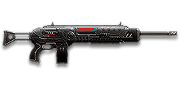

← Back to the T16 Rhino comparison
Sage Guide · Terran Republic · Heavy Assault
The Terran Republic's accurate sustained-fire LMG. It costs 650 certs, holds 100 rounds, and stays on target longer than any other TR LMG — if you treat it right.
The one-line verdict: a gentle, accurate 100-round hose with the tightest aimed cone in its class. It rewards stopping, aiming, and short bursts, and punishes spray-and-pray. Fight between 10 and 50 metres and it will carry you.

The T16 Rhino · Terran Republic · 100-round box magazine
Picture the scene, because you've probably lived it: you're sprinting across a courtyard, an enemy appears, and you do everything at once — hold the trigger down while you're still running, then press aim-down-sights (ADS) a split-second later, finger still down. The sight picture snaps in, it looks precise… and your bullets spray everywhere except the man in your crosshair. He kills you. It feels like the game cheated. It didn't — here's what actually happened.
1 · Sprinting
You open fire mid-sprint, from the hip. The cone is already at its widest — 7.0° — before the first bullet leaves the barrel.
2 · ADS, finger still down
You press aim-down-sights mid-hold — and nothing resets. The scope only gives you a precise picture; the bullets keep flying out of the wide cone you built while running.
3 · The spray
Accurate-looking aim, wildly inaccurate gun. Your first half-second of fire is confetti — and by the time the cone settles, you're already dead.
1 · Stop
Let go of sprint — and of the trigger, if you're already holding it. Your gun needs about 0.3 s to settle after a sprint. Plant your feet or drop into a strafe.
2 · Aim
Press ADS and let the sight come up. This takes a heartbeat — that's fine, your overshield (F) covers it. Now the dot and the gun agree.
3 · Fire
Now fire. Starting from the aimed cone of 0.1°, your first shots land where the dot points, and you control the bloom from zero instead of inheriting a maxed-out cone.
No ADS needed, and stopping is optional. At arm's length the Rhino's hipfire ring is only about 0.56 m wide — roughly the width of a chest — so keep moving, strafe side to side, and shoot from the hip. Scoping in here costs time and halves your speed, which is exactly how you lose a point-blank fight. The stop–aim–fire rhythm is a mid-range habit: close enough that you reached for the sight, far enough that the spray missed.
You started firing from a sprint, from the hip. Sprinting is the least accurate state in the game: your cone of fire starts at 7.0° — fully bloomed, the widest it can ever be. Every shot you fire from the hip widens it further still (+0.1° per shot).
Then you pressed ADS mid-hold — and nothing reset. Aiming down sights does not shrink a cone of fire that is already bloomed. The scope only gives you a precise picture; the bullets keep flying out of the wide cone you built while running and hipfiring. That's the whole mystery: accurate-looking aim, wildly inaccurate gun.
Two timers stack the deck further: your gun needs about 0.3 s to settle after a sprint, and raising the sight itself takes ~0.15 s. Trigger held through all of it means your first half-second of fire is pure confetti.
1 · Feet. Let go of sprint (and the trigger, if you're already holding it). Stop, or drop into a strafe — anything but a full sprint.
2 · Sight. Press ADS and let the sight come up. This takes a heartbeat — that's fine, your overshield (F) covers it.
3 · Trigger. Now fire. Starting from the aimed cone of 0.1°, your first shots land where the dot points, and you control the bloom from zero instead of inheriting a maxed-out cone.
Stop → aim → fire. If you take one habit from this entire page, take this one. You'll practise exactly this rhythm in the simulator in section 04.
Every enemy infantry has 1,000 health (500 shield + 500 health). Your bullet does 143 damage up close, fading to 125 at long range. Headshots count double, leg shots count less (×0.9). The Rhino is simple to memorise — it only has two damage tiers, not three:
| Range | Damage | Head | Chest | Legs | Chest vs shielded Heavy |
|---|---|---|---|---|---|
| Close · 0–20 m | 143 | 4 | 7 | 8 | 11 |
| Far · 20 m+ | 125 | 4 | 8 | 9 | 12 |
Perfect-accuracy times to kill: 4 headshots ≈ 0.27 s in either tier; 7 chest shots ≈ 0.55 s up close, 8 chest shots ≈ 0.64 s past 20 m. In real fights you'll land maybe half your rounds — still, this is why the head matters so much on this gun. And notice the head count never changes: 4 headshots kill at any range.
Full power to 20 m — ten metres further than most LMGs — then a steady slide to minimum at 65 m. The gold line shows High Velocity Ammunition, which pushes minimum damage out to 85 m but starts the slide at 18 m instead.
One gun, four fighting styles. The right technique changes with distance — use the range finder below to see what your bullets do at any range, then learn the four bands underneath it.
How to fight hereAim down sights at the upper chest and neck. Fire in bursts of about 5 — your recoil climbs into the head for free damage.
Aim: centre of the chest, from the hip. Keep moving.
Scoping in costs you time and halves your move speed — at arm's length that gets you killed. The Rhino's hipfire is wide (4.0° standing), so this only works because the target is close: the 0.56 m ring in section 05 still covers his chest. Strafe side to side (A/D) while firing so you're hard to track, and let the overshield soak the return fire.
Aim: neck / upper chest. Bursts of 5–6 rounds.
This is where the gun earns its keep: full 143 damage all the way to 20 m, mild recoil, and a 100-round magazine that forgives a missed burst. Start your crosshair at the neck — the natural upward climb walks your shots into the head, and 4 head hits end the fight in about a quarter of a second. Strafe while scoped; you're slower, but a moving target still beats a still one.
Aim: chest. Bursts of 5–6 rounds, pause between them.
Damage is sliding toward 125 and your cone of fire blooms if you hold the trigger. Fire a burst, release for a split second to let accuracy reset, fire again. The recoil climbs straight up (0° angle, no sideways drift), so pull your mouse gently down. Crouch or stand still when you can — both tighten your shots.
Aim: chest. Taps of 3–5 rounds at exposed targets only.
At 125 damage you need 8 chest hits — a long, loud advertisement of your position. Take these shots at stationary or fleeing targets, medics reviving, and engineers on turrets. Otherwise, your better play is to close the distance behind cover. Knowing when not to shoot is a skill too.
Your accuracy is decided by two things before skill even enters it: what your body is doing (your stance sets the starting cone of fire) and what your finger is doing (holding the trigger grows that cone with every shot). The Rhino has no fire-mode switch — full-auto only — so "firing modes" are something you do with your finger, not a setting on the gun.
| Stance | Starting cone | What it means for you |
|---|---|---|
| Sprinting | 7.0° | Maxed out — the widest the cone can be. This is the section 01 disaster: never start firing from a sprint. |
| Hipfire, moving | 4.5° | Walking or strafing from the hip. Fine inside ~8 m, leaks rounds past the target beyond it. |
| Hipfire, standing | 4.0° | Your point-blank default. The 0.56 m ring at 8 m in section 05 is this stance drawn out. |
| Hipfire, crouched | 3.5° | The tightest hipfire you have (4.0° if you crouch-walk). Crouch when holding a doorway from the hip. |
| Aimed (ADS), feet planted | 0.1° | Standing or crouched makes no difference here — forty times tighter than hipfire. This is why section 01's order matters. |
| Aimed (ADS), strafing | 0.4° | Still tight, but you move at half speed (0.5×). Strafe between bursts to stay hard to hit; plant your feet during each burst. |
| Aimed, bloomed out | 1.2° max | Even a full mag dump can't bloom the aimed cone past 1.2° — most LMGs cap at 3°. The Rhino stays accurate longer than anything else in its class, even when you hold the trigger too long. |
| Mode | How your finger does it | Use it at |
|---|---|---|
| The mag dump | Hold the trigger and don't let go | Point blank only, or suppressing a doorway. Bloom maxes out fast — past ~8 rounds you're spraying, not aiming, even with the 1.2° cap. |
| Bursts — the default | Hold for 5 rounds, release ~0.15 s, hold again. 6–8 rounds is fine while you're learning | Almost everything, 8–50 m. Your first ~6 aimed shots stay tight, so every burst starts at 0.1°. |
| Tap-fire | Short taps of 3–5, or single clicks, with a real pause between | 50 m and out, at exposed or stationary targets. Slow, but every round goes where the dot is. |
A target 30 m away, aiming down sights. Press and hold FIRE (mouse, touch, or hold Space with the button focused) and watch the holes walk wider the longer you hold — that's firing from an ever-growing cone. Release, let the cone reset, fire again. Aim for bursts of 5; 6–8 is tolerable while you're new. This practice window is shared by the whole Sage series: it's driven by a weapon profile plugged into the window — here the Rhino's (659 RPM, 0.1° starting cone, 0.05° bloom per shot, target at 30 m) — and the spread is drawn at true scale from those numbers.
Cone of fire — fills as you hold, empties when you release. (It stops at 1.2° — the Rhino's aimed cap.)
Your bursts will be graded here — green at 5 rounds, tolerable up to 8.
Some things are easier to show than to say. Here's what your bullets actually do: how wide hipfire spreads at 8 metres, what a good burst rhythm looks like, and what the 2x sight really changes. The hands-on version — holding the trigger yourself — is the practice window in section 04.
A full-size target 8 m away — an arm's-length room fight. The rings show where hipfire rounds land around your aim point (the chest). Sizes are drawn to scale from the gun's real cone-of-fire numbers.
Read it this way: standing still, the 0.56 m ring roughly covers the chest — most rounds hit a target this size, which is why hipfire works point-blank. But move and it grows to 0.63 m — wider than the torso — so the edge rounds start leaking past him, and the rings only grow with distance while the man doesn't. Past ~10 m that's rounds missing entirely: the exact moment to switch to aiming down sights, where the spread shrinks to a dot. The Rhino's hipfire is the widest of the accurate LMGs — respect that, and let the Laser Sight shrink it when you build for indoors. (Ring sizes use the real geometry: spread diameter = 2 × distance × tan(cone ÷ 2).)
Every shot widens your cone of fire ("bloom"). Releasing the trigger for a heartbeat resets it. Same 18 rounds, two very different outcomes:
The target pattern is bursts of about 5 rounds — that's the ideal. Bursts of 6–8 are fine while you're new (call it newbie tolerance). Past that, the bloom (0.05° per shot aimed, 0.1° from the hip) keeps growing with every shot, so the extra bullets mostly decorate the wall behind your enemy instead of hitting him. Short bursts also leave you rounds for the second enemy — even a 100-round magazine vanishes fast if you hold the trigger down.
No zoom. The target at 35 m is small but the view is wide open — you see the crate, the tower, and the next enemy coming. Fast to aim, nothing blocks your edges. Best inside ~40 m.
Same target, same 35 m — but he looks twice as tall, so placing shots on his chest and head gets much easier. The price: your view narrows to the round window, the crate and tower are gone, and close targets feel fast and huge. Best at 25–50 m.
That's the whole 30-cert decision from section 06 in one picture: 1x for awareness, 2x for precision. Most veterans carry both and swap per base — indoors 1x, open ground 2x.
The Rhino itself costs 650 certs — so the attachments below are the second purchase, not the first. Unlike a starter gun, nothing here is free: the iron sights are your default, and every attachment costs certs. Buy in the order shown and stop whenever the gun feels right.
Plain metal sights, no magnification. They work — but a red dot is clearer, faster, and cheap.
Good: your first hour with the gun, before you've earned 30 certs.
Bad: as a permanent setup — the 1x reflex is the same view, cleaner, for the price of one kill.
A clean red-dot sight with no zoom. Your default in practice, and honestly your best all-round option.
Good: everywhere indoors and out to ~40 m — which is most PlanetSide fights.
Bad: picking out targets past 50 m; that's what the 2x is for.
Doubles your view magnification. Costs almost nothing — the price of one kill or two.
Good: open-field bases, tower fights, and your 25–50 m burst game. Swap between 1x and 2x per fight.
Bad: tight indoor rooms — the zoom makes close targets feel fast and huge.
Night-vision sight: enemies glow white against a dark view, and it sees through smoke.
Good: night fights, smoky doorways, spotting infiltrators by their outline.
Bad: daytime and long range — its view is short-ranged and washes out in bright light.
DMO / HDS (3.4x) and TMS / ACS (4x) — sniper-style magnification on an automatic LMG.
Good: almost nothing a beginner does — recoil magnifies too, and tunnels your vision.
Bad: any fight inside 30 m, which is where you'll spend your first hundred hours.
The Rhino's recoil is already gentle — straight up, no sideways drift, and only 0.3 per shot. Plenty of veterans run this slot empty forever.
Good: your first weeks. Spend certs on your suit and shield first.
Bad: nothing — there's no downside to an empty slot.
Cuts vertical recoil by 30%. Costs you: hipfire spread grows 15%, and enemies see you on the minimap from 35 m farther away when you fire.
Good: if you mostly aim down sights at mid-range and the upward climb bothers you.
Bad: hipfire builds and sneaky play — you get louder on the map and sloppier from the hip.
Your shots bloom 20% slower while aiming — longer accurate bursts. But you move 20% slower while scoped.
Good: holding a lane or doorway at 25–50 m, firing from a steady position.
Bad: aggressive room-clearing — the slower scoped strafe makes you an easier target.
Hipfire bloom grows 40% slower — much steadier hip spraying. But vertical recoil rises 20% when you do aim.
Good: a dedicated close-quarters build paired with the Laser Sight.
Bad: general play — it taxes the aimed shooting you'll do most.
You vanish from the minimap when firing and your shots are quiet. In exchange, damage starts dropping off 20 m sooner (full damage ends at point blank instead of 20 m) and bullets fly 15% slower (640 → 544 m/s) — harder to lead moving targets.
Good: flanking behind enemy lines, rooftop and tree work, solo play behind the front.
Bad: front-line fighting where everyone already knows where you are — you pay the damage cost for stealth you don't need.
Hides your muzzle flash so your own view stays clear at night — but you appear on enemy minimaps from 15 m farther away.
Good: night fights where your own flash blinds you. A comfort pick, nothing more.
Bad: as an early purchase — it changes no fight outcome. Buy it last, if ever.
Cuts side-to-side recoil by 25%, keeping your bursts on a single target. Tiny cost: weapon swap is 0.15 s slower.
Good: the default for aimed, mid-range play — leave it on until you deliberately build for hipfire or endurance.
Bad: nothing meaningful. It only stops helping if you never aim down sights.
Hipfire accuracy improves by a third (33% tighter cone — the 0.56 m ring at 8 m shrinks to 0.37 m). Replaces the Forward Grip — you can't have both.
Good: indoor point-holds and stairwell fights where you hipfire inside 8 m.
Bad: open bases — you give up aimed recoil control for a bonus you rarely use.
Doubles the magazine to 200 rounds — the Rhino's party trick, shared with the CARV-S and Butcher. Costs you: the gun takes 20% longer to equip and unequip.
Good: holding a lane, suppressing a doorway, or any fight where reloading gets you killed. With the Rhino's slow 3.96 s reload, reloading half as often is real value.
Bad: duels where the slower weapon swap matters — and it replaces the Forward Grip, so your bursts walk a little wider.
The first shot of each burst kicks 60% less — but side-to-side recoil rises 10% on everything.
Good: disciplined burst and tap-fire at 40 m+, where every burst starts fresh.
Bad: beginners' longer bursts — the Rhino's first-shot kick is already gentle (1.5x), so the trade rarely pays early.
A torch whose beam reveals cloaked infiltrators. Toggle it with the attachment key (X by default).
Good: hunting a stalker infiltrator camping your capture point — sweep corners with it.
Bad: as your everyday rail — it gives zero accuracy help, and the beam advertises your position.
Bullets fly 10% faster (640 → 704 m/s) and minimum damage now holds out to 85 m instead of 65 m. Cost: full damage ends at 18 m instead of 20 m — two metres you will never notice.
Good: nearly always — faster bullets need less lead on moving targets, and the longer minimum-damage range is free damage at 65–85 m.
Bad: nothing meaningful. This is the closest thing to a free upgrade on this gun.
A Terran Republic trait round: leg shots deal 20% more damage (the usual leg penalty is gone too), but headshots lose half their bonus — headshots stop counting double. It raises your damage when aiming for the head is impractical, and only the Rhino gets it among the guns like it.
Good: if you struggle to hit heads and mostly land body and leg shots — it turns your misses into real damage.
Bad: the moment your aim improves: giving up double headshot damage throws away the fastest kills on this page (4 headshots in 0.27 s).
0 certs · Day one (gun itself: 650)
What the purchase hands you. Genuinely usable — learn the gun on this before spending anything more.
230 certs · Recommended
The best value in this whole guide. Covers every fight from a doorway to a tower courtyard.
230 certs · Indoor brawler
Built to hipfire down stairwells and hold a capture point room. Swap back to the All-Rounder outdoors.
230 certs · Lane holder
200 rounds, a flat-shooting barrel, and a 2x sight: hold a lane all day without reloading. Weak in a fair close fight — so don't take fair close fights.
Your overshield (F key) is extra health that only helps if it's on before the bullets arrive. Hear footsteps or expect a corner? Shield up, then peek. A shielded Heavy needs 11 chest shots to drop up close instead of 7 — that gap wins duels.
Headshots deal double damage: 4 kills at any range versus 7–8 to the chest. Don't aim at the head directly — aim at the neck and let the gun's natural upward climb carry shots two and three into the skull. It's the single biggest damage upgrade you own, and it's free.
Every shot widens your cone of fire. Your first ~6 aimed shots stay tight, but holding the trigger past ~8 rounds at range means later bullets fly around your target, not into it. Five rounds is the ideal burst; release the trigger for a heartbeat between bursts — your accuracy resets and your hits per magazine roughly double.
Reloading with even 1 bullet left takes 3.96 s; an empty gun takes 4.93 s — an eternity mid-fight. Count roughly: after two kills or ~60 rounds, duck behind cover and reload early. Treat the last 20 rounds as your emergency reserve, not your working magazine.
Walk with your crosshair at head height, pointed where an enemy's head will appear — a doorway edge, a corner, stairs. Most beginners lose fights in the half-second spent dragging the crosshair onto target. While firing, tap A/D to strafe: a moving Heavy is dramatically harder to headshot back.
Your damage, accuracy and magazine all shine at close-mid range. Sprint between cover, use buildings and rocks as stepping stones, and arrive at your range before opening fire. The player who chooses the range usually wins the duel — make it you.
Every gun has a price. Here's where the Rhino pays — and the habit that covers each hole.
659 RPM is slow for an LMG. The VS Orion and TR CARV both fire 750 RPM — if you and an enemy Heavy trade chest shots face-to-face, their bullets add up faster than yours: 0.48 s to your 0.55 s up close.
Play around it: don't trade fairly. Shield first, aim for the neck, and use corners — your per-bullet damage and accuracy win fights that start on your terms.
3.96 s with rounds left, 4.93 s on empty — one of the slowest reloads on any accurate LMG. An enemy who hears you start reloading has time to cross the room.
Play around it: the 100-round magazine is the cover for this weakness — reload half as often as a 50-round gun, reload early (habit 4), and fit the Extended Magazine (200 rounds) if you hold lanes.
4.0° standing from the hip is the widest of the accurate LMGs — the CARV and Orion are tighter, and the XMG-100 tighter still. Past 8 m your hipfire leaks rounds fast.
Play around it: hipfire only inside 8 m, and fit the Laser Sight for the indoor build — it shrinks the 8 m ring from 0.56 m to 0.37 m.
The Rhino can't fit it, so you get no cheap 5 m extension to your full-damage range — and its one exotic alternative, KCAP, throws away your double headshot damage.
Play around it: you don't need it: full damage already reaches 20 m. Take High Velocity Ammo instead — faster bullets and minimum damage out to 85 m, for the same 100 certs.
Like all LMGs, you move at half speed while aiming down sights (0.5x), and the gun takes 1.1 s to swap to — slow if a fight surprises you with your rocket launcher out.
Play around it: hipfire inside 8 m instead of scoping (that's the Point Hold build's whole idea), and swap weapons behind cover, never in the open.
Open the world map, travel to VR Training, and run these on the target dummies. Five minutes before a play session beats an hour of dying confused.
Aim at a wall 20 m away and empty a full magazine without touching the mouse. Watch the bullet pattern climb straight up — that's your gun's fingerprint (no sideways drift at all). Repeat, this time pulling straight down, until the group stays fist-sized.
Walk the dummy range keeping your crosshair glued to neck height the whole time, snapping to each new target without dipping to the floor or sky. Slow and clean first; speed comes on its own.
At 30–40 m, kill dummies with bursts of 5–6, releasing the trigger fully between bursts. If a burst goes wide, shorten it. Goal: whole kills without a single wild round.
Pick a dummy, stand 5 m away, and circle it with A/D while hipfiring it down without stopping. This is your point-blank survival skill — the one that fires while your shield and movement do the defending.
Fire exactly 60 rounds, step behind a pillar, reload, repeat. Train your hands to reload early and only in cover until it's automatic — in real fights you'll do it without thinking, which is the point. With 100 rounds, you can afford to reload after two kills instead of one.